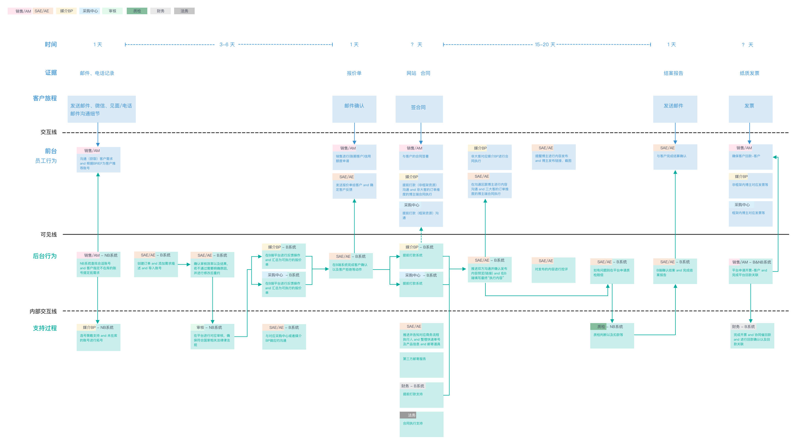
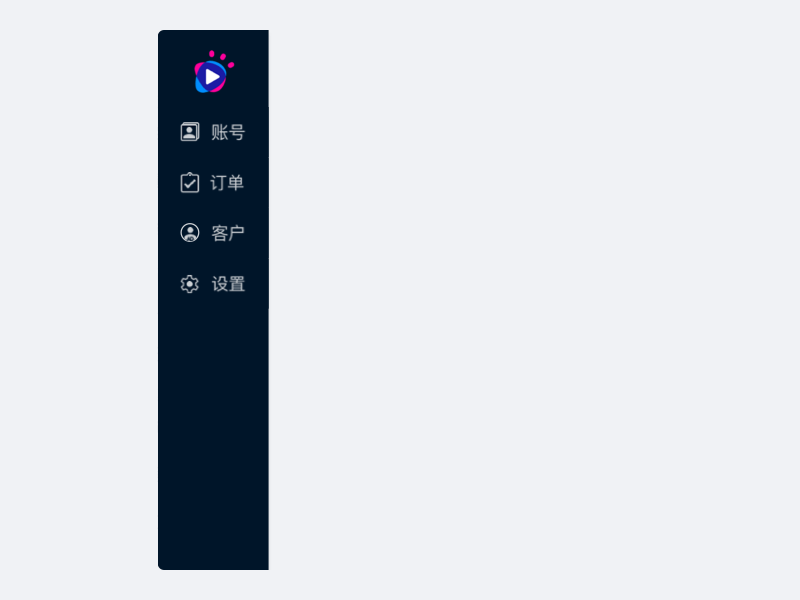

Babysitter(BS) is an enterprise internal office system, and it also contains some functions of Customer Relationship Management( CRM) product. The employee can use the system to deal with their business stuff, for example, expand the resource of influencers, select influencers, check orders, adjust the price, combine the business orders, etc.
系统B是微播易企业内部办公系统，用于企业内部各部门员工处理工作事物的系统，其中包含了部分CRM功能，用于管理客户关系。大部分功能用于处理交易订单全流程。其中包含了，拓号、选号、质检、调价、订单合成等功能。
My role in this project is User Experience design and Architecture design.
我的职责是信息架构设计和用户体验设计。
I used much of time to conduct research, interview, business process map, service blueprint map. One week on wireframes and final interactive design.
我花了大量的时间进行调研、业务和服务蓝图流程梳理，最终的交互设计。
Problem 问题
Lack of complete product information architecture support, product design lacks scalability. Lack of product development long-term planning, because the old version of the design does not fully understand the product positioning and future functional development direction, resulting in the existing architecture can not accommodate new features. Users cannot find the demand target smoothly
- 缺乏了完整的产品信息架构支撑，产品设计缺乏延展性。缺乏产品发展远期的规划，由于老版设计没有完整理解产品的定位和和未来功能发展方向，导致现有的架构没法容纳新的功能。
- 用户无法顺利找到需求目标
The Challenge 挑战
To figure out the intricate business process with the different departments.
Simplify the complex interaction process, improve the uses’ using experience, and make them high-efficiency.
Organize and structure the content of the system so that users would easily adjust to the functionality fo the product and could find everything they need without bit effort.
了解不同部门之间复杂的业务流程。
简化复杂的交互过程，提高用户的使用体验，提高使用效率。
组织和构造系统的内容，这样用户就可以轻松地调整产品的功能，并且不费一点力气就可以找到他们需要的一切。
The Purpose 目的
Make the system expand new features effortlessly.
Improve user efficiency to deal with their daily works.
Easy to use and understand for the user without any experience.
使系统扩展新功能毫不费力。
提高用户处理日常工作的效率。
易于使用和理解的用户没有任何经验。
The Objects of This Project is to 项目目标是
Design new navigation and test the inconsistencies in the existing functionality and add new features to expand the usability of the application.
Simplify and merge multiple order status and reduce resource consumption caused by too much useless data.
设计新导航并且测试现有功能中的不一致性，并添加新特性来扩展应用程序的可用性。
简化并合并复杂的订单状态，减少过多无用数据造成的资源消耗。
I. User Interview 用户访谈
We interviewed stakeholders from our project team. They use B System as a daily tool, and some of them are first time user.
我们采访了我们项目组的利益相关者。他们使用B系统作为日常工具，其中一些是第一次用户。
We conducted usability testing focused on finding usability issues. For example, observing expand the resource of influencers, select influencers, check orders, adjust the price, combine the business orders, etc. experiences, getting feedbacks and making improvements and enhancements on existing and new features and functions.
我们进行了可用性测试，重点是发现可用性问题。例如，观察扩大影响力者的资源，选择影响力者，检查订单，调整价格，结合业务订单等经验，得到反馈，对现有的和新的功能和功能进行改进和增强。
We aggregated and analyzed our test results. I was able to redesign user workflow and made iterations based on analytic reports from user interview and usability testings.
我们汇总并分析了我们的测试结果。我能够重新设计用户工作流，并根据用户访谈和可用性测试的分析报告进行迭代。
II. Information Architecture 信息架构
Service Blueprint 服务蓝图
Service blueprints visualize organizational processes in order to optimize how a business delivers a user experience. Service blueprints should always align to a business goal: reducing redundancies, improving the employee experience, or converging siloed processes. blueprints help identify opportunities for optimization.
服务蓝图可视化组织流程，以优化业务交付用户体验的方式。服务蓝图应该始终与业务目标保持一致:减少冗余、改进员工体验或聚合竖井流程。蓝图有助于识别优化的机会。
Business Process 业务流程
Organizing Navigation 组织导航
Organizing task vs Unorganized stream
Intranets are improving findability and discoverability by organizing content by task rather than department, using mega-menus to present deep content, offering clear cues to help orient users, and providing shortcuts to important pages and tools.
内部网通过按任务而不是部门组织内容、使用大菜单来显示深度内容、提供明确的线索来帮助用户定位、提供重要页面和工具的快捷方式，正在改进可查找性和可发现性。
The interaction of the navigation design
I used the drawer navigation instead of the vertical dropdown navigation. Previously, the user is hard to switch the items of the menu in the original navigation. When they select one item, all of the menus will disappear. In the new design, the user can control whether it appears or not.
我使用了折叠导航而不是垂直下拉导航。以前，用户很难在原始导航中切换菜单项。当他们选择一个项目时，所有的菜单都会消失。在新的设计中，用户可以控制菜单是否出现。
Design Flow
